一場人與自然永續共生之旅 — 在台東都蘭山的七層綠意之間，學習傾聽土地的語言
八月初的台東，空氣裡帶著熱帶季節的濕潤與生機。清晨，都蘭共學堂的成員們陸續聚集，準備走入施炳霖老師在都蘭山上精心培育十數年的「綠光食物森林」。
行前，有人問：食物森林與一般農地有什麼不同？施老師笑著說，「農地是人對土地說：你聽我的。食物森林，是人去問土地：你需要什麼？」這句話，成了這天所有觀察的注腳。
「我在這裡做的，不是種田，是把生態系裝回來。把時間還給土地，土地自然會知道怎麼回應你。」
— 施炳霖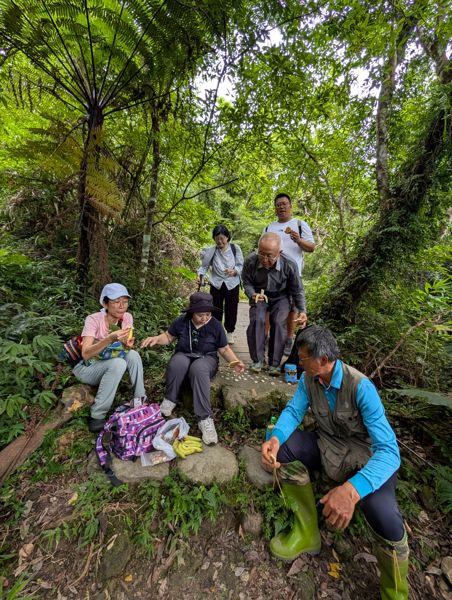
從公路轉入產業小道，樹冠逐漸合攏，光線從白熱的直射變成斑駁篩落的柔光。空氣驟然降溫，皮膚感受到一種說不清的清涼，像是進入了另一個時區。
腳下的土不是一般農地的板結土，而是鬆軟、帶著腐葉氣息的「活土」。踩下去有輕微的彈性，那是腐植質和無數微生物共同構成的海綿結構。施老師說，這種土，用機器翻一次就廢了。
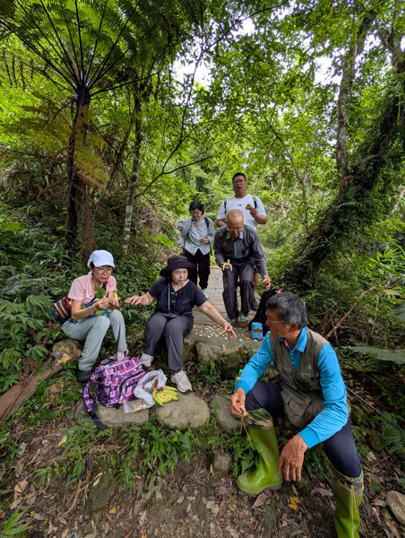
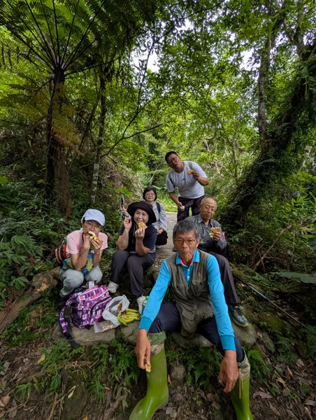
站在森林邊緣向內看，第一眼會覺得雜亂——藤蔓橫跨、落葉鋪地、大小樹木混雜。但施老師說，這正是設計的一部分：「你感覺到的無序，就是生態的有序。」
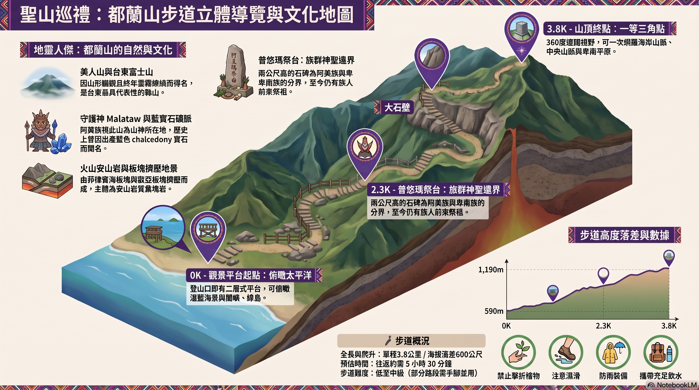
都蘭山步道立體導覽地圖，標示出食物森林所在的生態區域
食物森林最核心的設計理念，來自對熱帶雨林的模仿：植物不是平面種植，而是按照高度、耐陰性與生態位，分成七個垂直層次，讓每一束光都能被充分利用，讓每一寸土壤都有根系覆蓋。
高大的先驅樹種，如構樹、血桐、白匏子。遮蔭固氮，快速建立生態骨架，也是整座森林的「屋頂」。
果樹與中型木本植物，包括香蕉、木瓜、芭樂等，在冠層庇蔭下穩定生長，是食物產出的主力。
藥用植物與香草聚集的高度，包括月桃、九層塔、各種薑科植物。這一層是整座森林的「藥房」。
一年生與多年生草本植物，提供地被覆蓋，防止水分蒸發，同時是小型昆蟲與微生物的主要棲地。
苔蘚、蕨類、匍匐性植物。保濕固土，是土壤微生物與菌根菌的生長基底。
山藥、菜豆、各種藤蔓。利用喬木攀爬，連接不同高度的生態位，形成三維的生物通道。
薑黃、芋頭、葛根等地下植物。在不打擾土壤結構的前提下，開發地下空間的生產潛力。
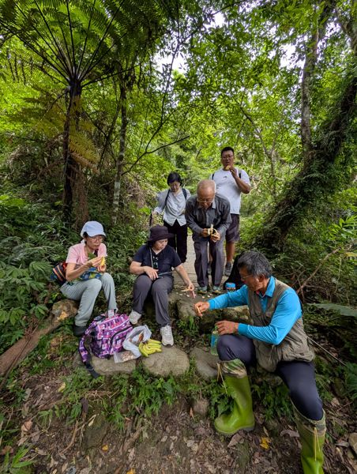
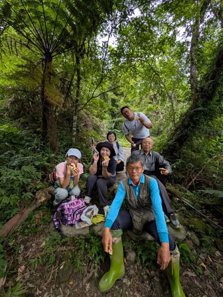
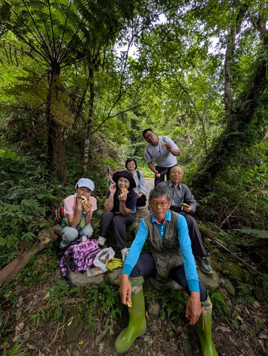
施老師帶著我們慢慢走，不時停下來指著某株植物說：「你看，這棵構樹長這麼快，是因為它知道自己是過客。它固好氮、累積好枯葉，就會讓位給後來的果樹。」先驅樹種的「犧牲」，是整座森林演替的關鍵。
在食物森林的灌木層，施老師開始逐一介紹那些「被遺忘的植物智慧」。月桃的葉可以包粽防腐抑菌、根莖可以提煉芳香精油；薑黃的根莖含有薑黃素，不只是廚房香料，更是抗發炎的天然藥方。
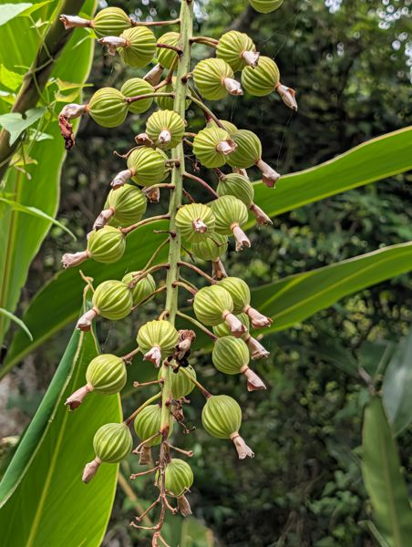
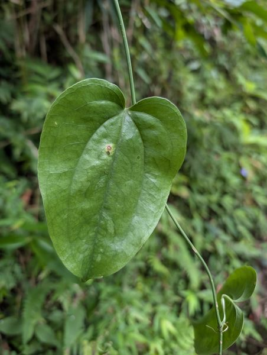
他特別提到阿美族傳統知識對植物的理解：「原住民知道哪棵樹的葉子可以退燒、哪棵草的根能止痛，這些知識不是迷信，是幾千年的臨床經驗。」食物森林的設計，有意識地保留並種植這些具有民族植物學意義的物種。
「植物不需要人教它怎麼長。人需要植物教，怎麼活。」
— 施炳霖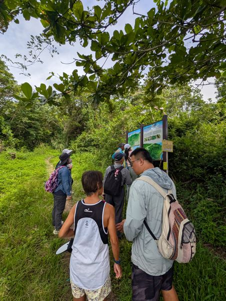
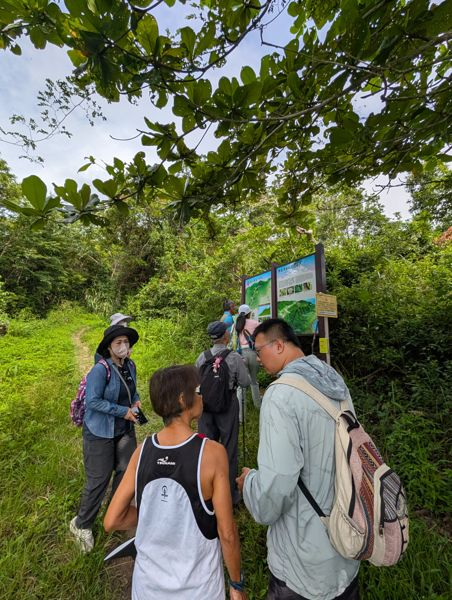
都蘭一帶阿美族（Pangcah）的傳統生態知識，已在這片食物森林中得到有意識的保存與傳承。施老師特別強調：在引進任何外來物種前，先問這片土地的原住民——他們的知識，往往比現代農學更深遠。
蹲下來，在腐木旁邊，一朵潔白如紙的小傘菇悄悄撐開——這不只是一朵菇，是一整個龐大地下帝國露出地面的訊號。
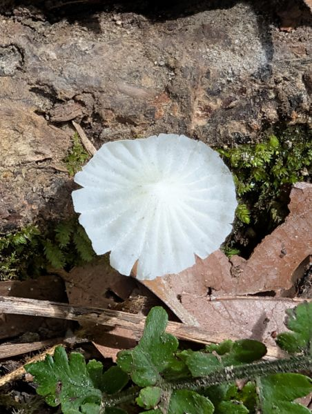
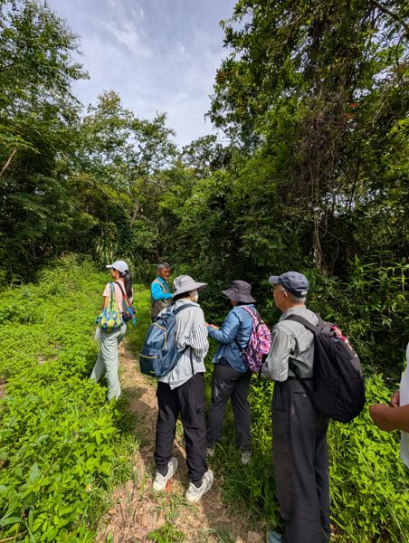
施老師解釋，這片食物森林從不使用農藥、不翻土，是為了保護土壤中的菌根菌網路。菌根菌和植物根系形成共生關係：植物提供光合成的醣分給菌菌，菌絲則大幅擴展植物吸收水分與礦物質的能力，還能在植物之間傳遞養分訊息。
「你以為樹木是孤立地活著，其實它們在地下手牽著手。一棵老樹生病了，旁邊的樹會透過菌絲送養分過去。這是森林的互助會。」
— 施炳霖這讓人想起生態學家 Suzanne Simard 關於「木材廣域網路」（Wood Wide Web）的研究：菌絲網路就是森林的神經系統，傳遞訊號、共享資源，讓整個生態群落作為一個有機整體運作。
傳統農業的深耕翻土，會切斷菌絲網路、破壞土壤團粒結構。食物森林採用「不翻土」原則，讓枯枝落葉自然腐化，維持土壤生物多樣性。施老師說：「最懶的農夫，有時候才是最好的農夫——因為他讓土地自己工作。」
走在林間，不時有蜂蝶擦肩而過。在一片葉子上，一隻紅頭黑身的甲蟲停在那裡——烏黑的翅鞘配上鮮紅的頭部，像是大自然刻意設計的警告色。
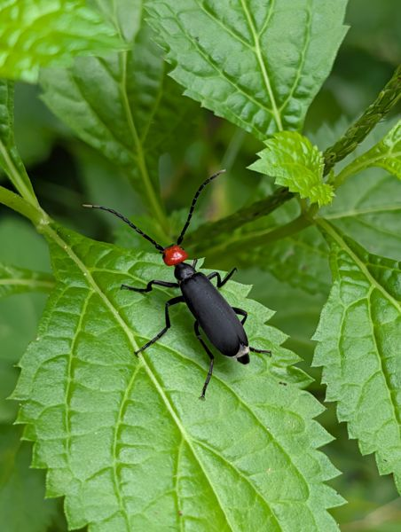
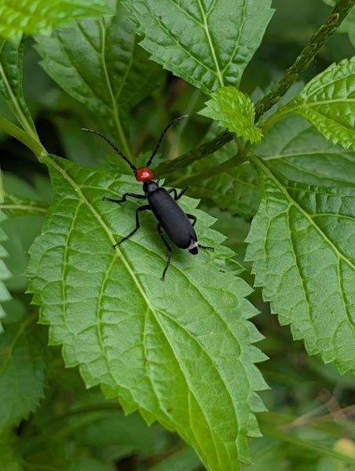
施老師說，一般農地因為使用農藥，昆蟲多樣性極低。但在食物森林裡，昆蟲不是害蟲，而是系統的參與者：有的分解有機質，有的為植物傳粉，有的控制葉食性昆蟲的族群。「你噴一次農藥，不只殺蚜蟲，把吃蚜蟲的瓢蟲也殺了。明年蚜蟲更多。」
食物森林以昆蟲種類與數量的豐富程度，評估生態系統的健康狀態。甲蟲、蜂、蝴蝶、蜻蜓的出現，代表食物鏈完整，棲地品質優良。施老師說：「哪天你在這裡看不到蟲，那才是要擔心的事。」
下午的討論從技術轉向哲學。坐在樹蔭下，施老師說起他走上這條路的起點——不是農學院的課堂，而是一場觀察：他注意到路邊沒有人種的野地，植物長得比精心管理的農田更繁茂、更健康。
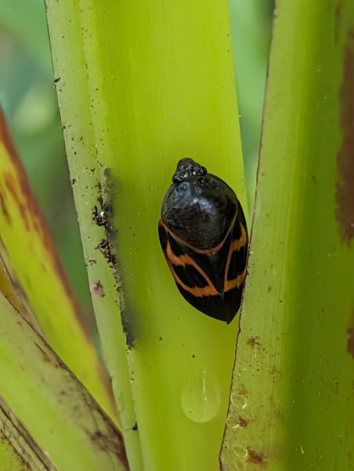
傳統農業試圖簡化自然（單一作物、清除雜草、消滅害蟲），食物森林則模仿自然生態系的複雜性與韌性。不是用人的邏輯改造土地，而是用土地的邏輯設計人的介入。
傳統農業以年為單位計算收益；食物森林以十年、五十年為尺度規劃生態演替。前三年幾乎沒有經濟產出，但第七年之後，系統自我運作，食物源源不絕，管理成本趨近於零。
在食物森林裡，沒有一棵植物是孤立生長的。先驅樹種為果樹遮蔭、豆科植物為鄰居固氮、菌根菌連接所有根系——每個物種都在為整體服務。這不只是農業，更是一種社會哲學。
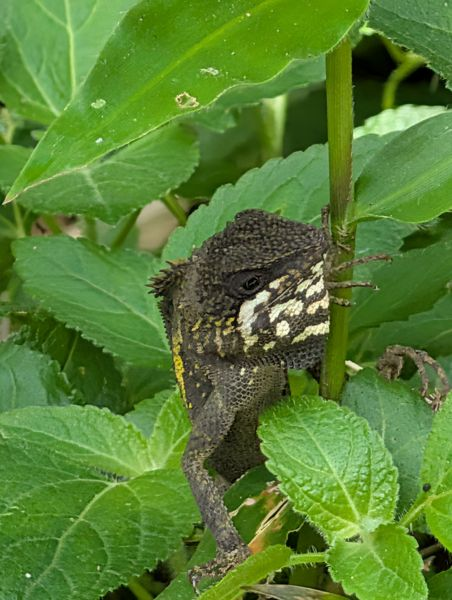
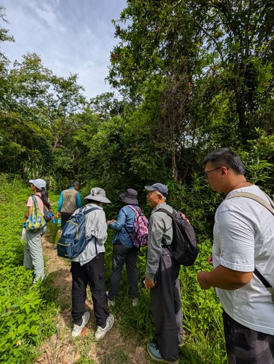
施老師說，很多人問他：種這個，賺得到錢嗎？他的回答是：「先問你自己，你想要什麼樣的生活？如果你只想賺錢，請去做別的。這裡做的事情，是在問：我們怎麼和這片土地一起好好活著？」
「永續不是一個技術問題，是一個態度問題。你願不願意慢下來，讓土地決定節奏。」
— 施炳霖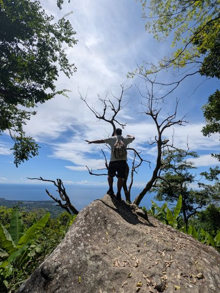
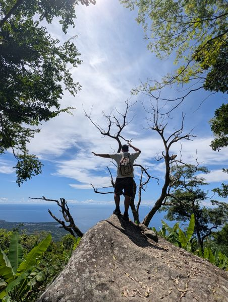
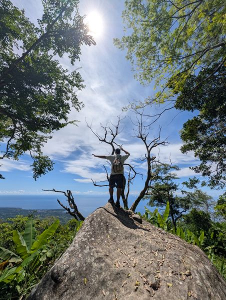
傍晚，光線斜入林間，整座食物森林染上金色。我們沿原路走出，腳踩在同一條路，但感受已全然不同。同樣的葉子、同樣的土，但現在知道它們背後的名字、關係、時間的厚度。
有人問施老師：如果有一天，你不在了，這座森林怎麼辦？他停頓了一下，笑了：「那就是這座森林長好了。它不需要我了。」
這大概是農人所能聽到的，最好的答案。
都蘭共學堂的這一天，不只是一堂農業課，更是一堂關於謙遜的課——謙遜地承認，我們對自然的理解，還遠遠不夠；謙遜地接受，有些事情，需要交給時間。
「自然不需要人來拯救，
人，需要自然來教導。」
— 都蘭共學堂，2026.08.02